Case study updates for Daniel
Financing, investment marks, proposed slide copy and real founder photographs for all six case studies. Based on the source review completed October 7; open items are called out below.
Keep the existing company story, dated operating metrics and Antigravity contribution. Add financing and investment multiples as compact, separate proof points.
Download shareable HTMLDownload handoff + image filesShare this page with Daniel, or download an offline copy with the images embedded. Email and Notion evidence links require the recipient’s own access. Internal working draft; this unlisted page is accessible to anyone with the link.
| Company | Financing | Investment mark | Publication status |
|---|---|---|---|
| Flai | $27M Series A | 3.32× | Ready for copy review |
| Halluminate | $30M Series A | 3.82× | Ready for copy review |
| Pace | $1.5M SAFE · working terms | 4.0× reference | Financing details need confirmation |
| Veria | $3.2M seed | No markup | Financing copy ready · no markup |
| Terac | $8M seed · last confirmed round | Pending | Markup unresolved |
| Bem | $10M Discovery Series · modeled | 1.30× conditional | Closing / issuance confirmation pending |
Flai and Halluminate use actual conversion shares × new-round share price ÷ invested cost. Pace’s 4.0× is a recorded SAFE-cap reference and must be labeled separately. Veria has no markup. Keep Terac’s multiple and Bem’s conditional financing/mark off the final slides until resolved.
Suggested common footnote: “Gross unrealized investment multiples. Financing-based indications; subject to fund valuation policy.” These calculations are not final administrator-approved Q3 NAV.
Visual direction and deck reference
Replace conceptual AI company scenes with photographs or photo-derived portraits. Match the existing team slide: navy graphite, stipple, warm paper and feathered edges. Preserve recognizable faces and poses, and include verified names. Flai’s treatment below is a preview; all other images are source photos.
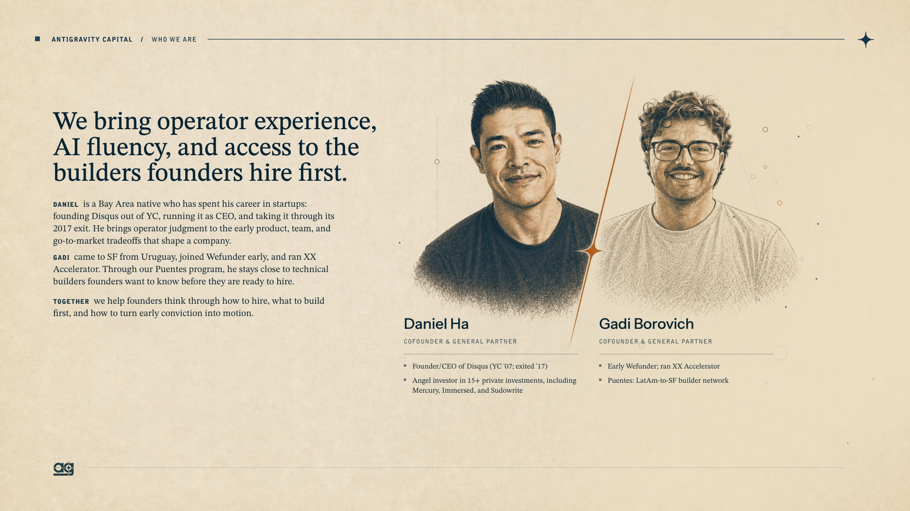
Flai
Ready for copy reviewInvestors: Led by Base10 Partners; Toyota Ventures, First Round Capital, Y Combinator, The Friedkin Group and Findlay Automotive Group.
Proposed slide copy
Context and next step
Keep “Answer the call. Then take on more.” and the relationship history. Replace the large dealership illustration; retain the small real Ari dealership-sales-weekend photo and caption. Review the pencil preview for likeness. Founders: Juan Alzugaray, Ari Polakof and Alen Polakof; confirm left-to-right order with Ari.
Valuation basis and evidence
Our $75,000 SAFE converted into 23,614 Series A-2 shares. At $10.5604 per share: $249,373.29 indicated value ÷ $75,000 cost = 3.324977× (+232.5%). Use 3.32× or 3.3×; the headline valuation ratio 150/35 is not our investment multiple. Financing closed September 11, 2026; announced October 6.
Photo options
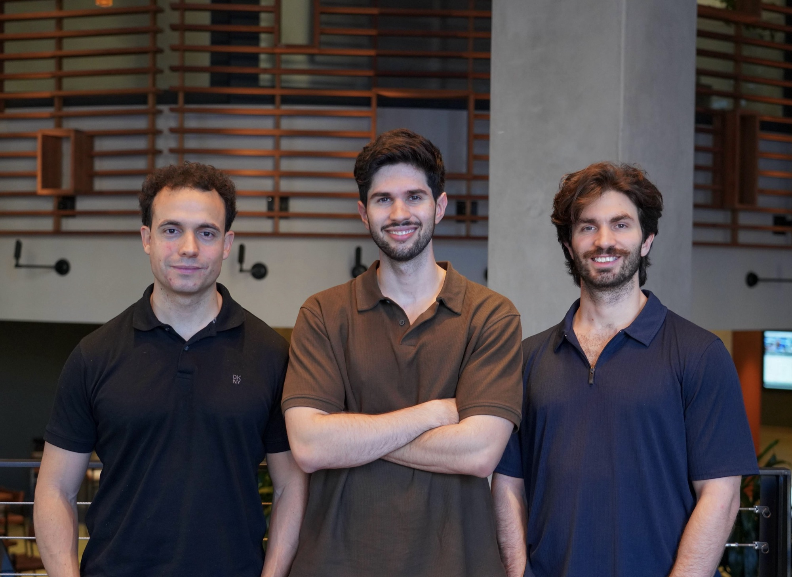
Three-founder original
2000 × 1457. Original source photograph from the existing Downloads file flai-series-a-team.jpg.
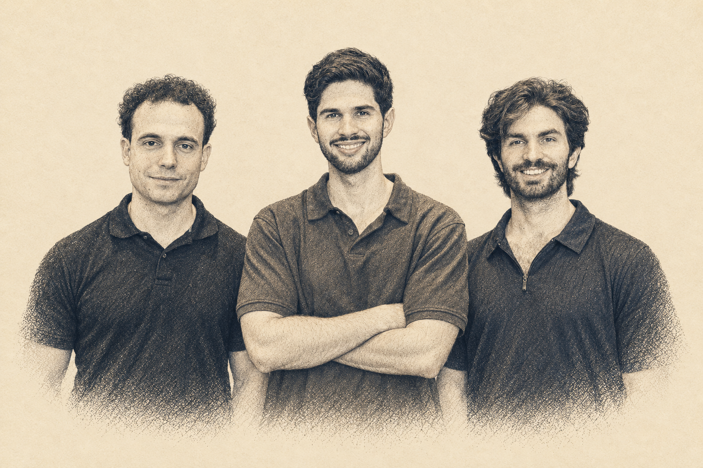
Portrait treatment preview
Photo-derived preview in the deck’s pencil aesthetic. Review likeness before use; not installed in the live deck.
Halluminate
Ready for copy reviewInvestors: Led by Oak HC/FT; Y Combinator, Orange Collective, FT Partners and Heavybit.
Proposed slide copy
Context and next step
Use the closer Jerry/Wyatt office photo as the first portrait option. The stage photo remains an alternative. Ask Jerry for the original office image or a current high-resolution cofounder photo if more face detail is needed.
Valuation basis and evidence
Fund I’s $75,000 SAFE converted into 23,825 A-7 shares. At $12.0408 per share: $286,872.06 ÷ $75,000 = 3.8249608× (+282.5%). This excludes the separate Halluminate co-investment SPV. The $150M post-money figure belongs to Flai, not Halluminate.
Photo options
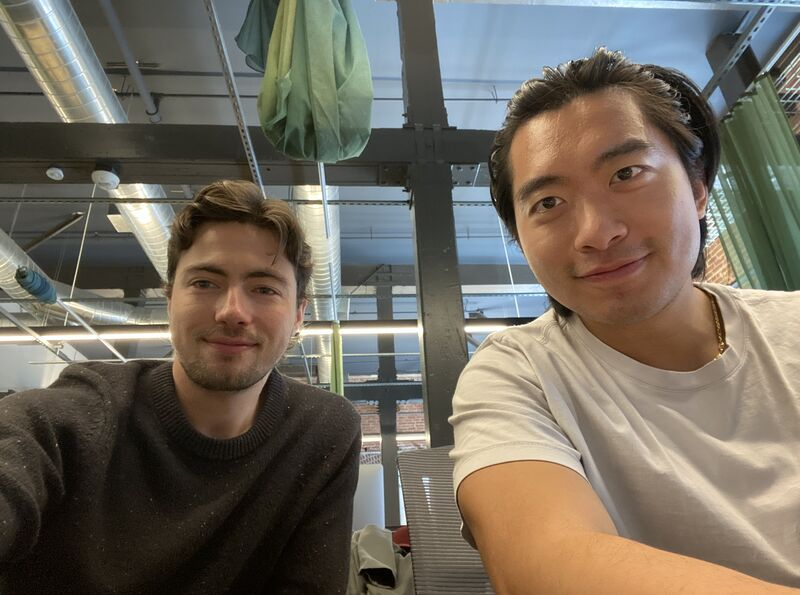
Halluminate · office photo
Jerry and Wyatt together, close to camera. This is a stronger composition for the pencil portrait treatment than the stage shot. Public copy is 800 × 595; ask for the original if a larger render needs more face detail.
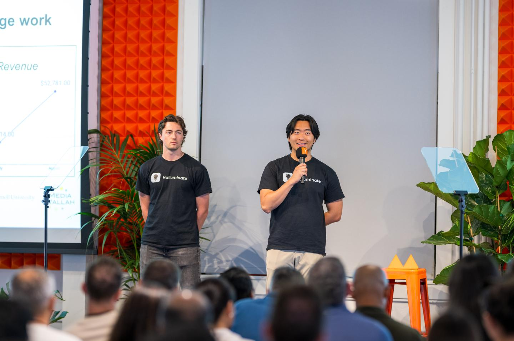
Halluminate
Wyatt Marshall and Jerry Wu onstage. A tighter crop would emphasize the founders; request the original for more detail.
Pace
Financing details need confirmationInvestors: ECMC was described as taking the final $200K. Completion, full syndicate and lead for this round remain unconfirmed.
Proposed slide copy
Context and next step
Confirm closing, lead and completed syndicate with Victoria. For imagery, use the clean Victoria headshot or speaking portrait. The JFF group includes outside panelists; the video-call grid is a team backup. A current in-person team photo would improve consistency. Confirm the current founder lineup before captioning.
Valuation basis and evidence
Notion records $200,000 invested, a $5M entry reference and a $20M latest reference, implying $800,000 at 4.0×. This is a cap-based reference, not converted shares valued at a new share price. Victoria’s September 15, 2025 email described the $1.5M raise as nearly closed. The signed-SAFE folder did not return accessible files in the review. Earlier confirmed financing: $2.3M+ seed led by E14 with JFF Ventures and strategic angels, reported in the 2024 updates. Do not carry those investors into the later round without evidence.
Photo options
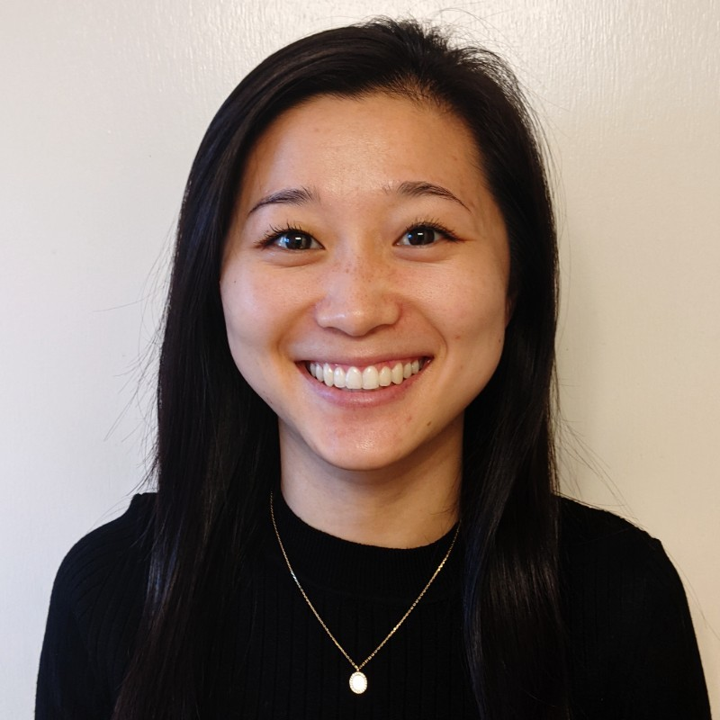
Pace · clean Victoria portrait
A second Victoria option: front-facing, neutral background, 800 × 800. Existing local original matches the smaller headshot in Pace’s public image library. Better for a clean portrait than the microphone shot.
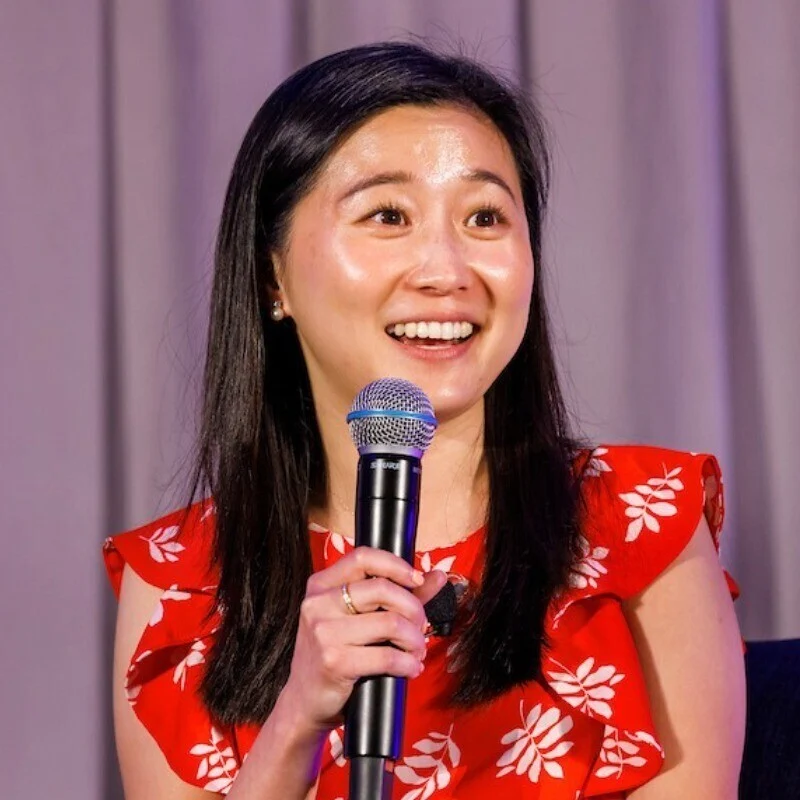
Pace
A clear, expressive portrait of Victoria Pu from Pace’s site. The available team group is a video-call grid; the portrait is the stronger deck option.
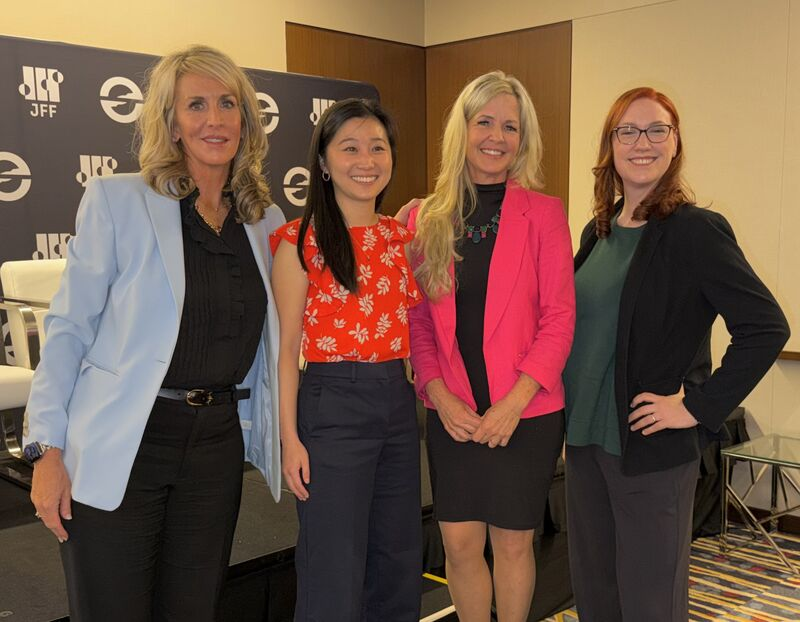
Pace · in-person panel group
Victoria with fellow panelists at JFF Horizons. A real in-person group image, but not a Pace team photo. Useful as a supporting event image; I would still use her solo portrait for the case-study hero. 800 × 622.
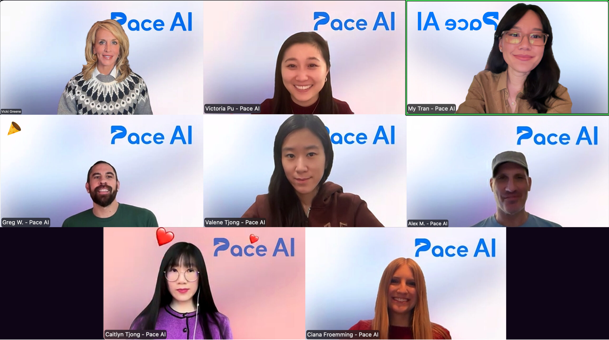
Team video-call backup
Company-published team grid. An in-person photograph would be stronger.
Veria
Financing copy ready · no markupInvestors: Selected backers: Y Combinator, Paul Graham, Gokul Rajaram and Matias Woloski. No lead is asserted.
Proposed slide copy
Context and next step
Start with the OWASP photo showing all three founders and their prizes. Founders: Stephen Xu, Cayden Liao and Jayden Sarveshkumar; confirm caption order. The Black Hat photo includes a fourth person whose role is unverified. The Cybersecurity Challenge photo shows only Cayden and Jayden.
Valuation basis and evidence
Gadi confirms no markup. Investment records carry our $75K SAFE at a $30M cap. The February 9, 2026 public announcement supersedes the January update’s tentative $3.15M amount. The slide’s four named backers are a selected subset, not the entire syndicate. The announcement also names MA7 Ventures, Seaplane Ventures, Amino Capital, Karman Ventures, Lombard Street Ventures, Liquid 2 Ventures, Schema VC, Hypersphere Ventures, BLAST, Unpopular Ventures, Metsu Capital, Antigravity Capital, Rock Yard Ventures, Eight Capital, BBQ Capital, Kevin Moore, Aarthi Ramamurthy and the Hyperplane founders.
Photo options
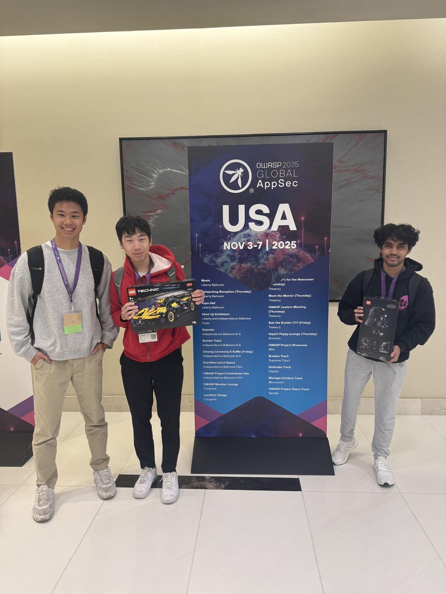
Veria · OWASP founders
All three founders posing with their CTF prizes at OWASP. My preferred new Veria option: faces are visible and the scene tells their story. 1152 × 1536; portrait framing with space between them.
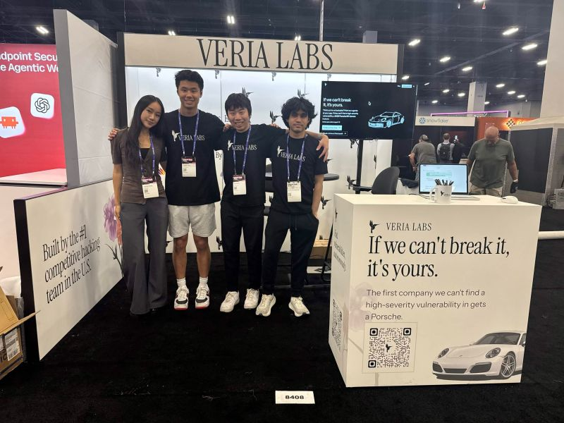
Veria · Black Hat booth
A relaxed group shot at the Veria booth. Four people are pictured; the fourth person’s role is unverified, so do not caption this as founders only. 800 × 600.
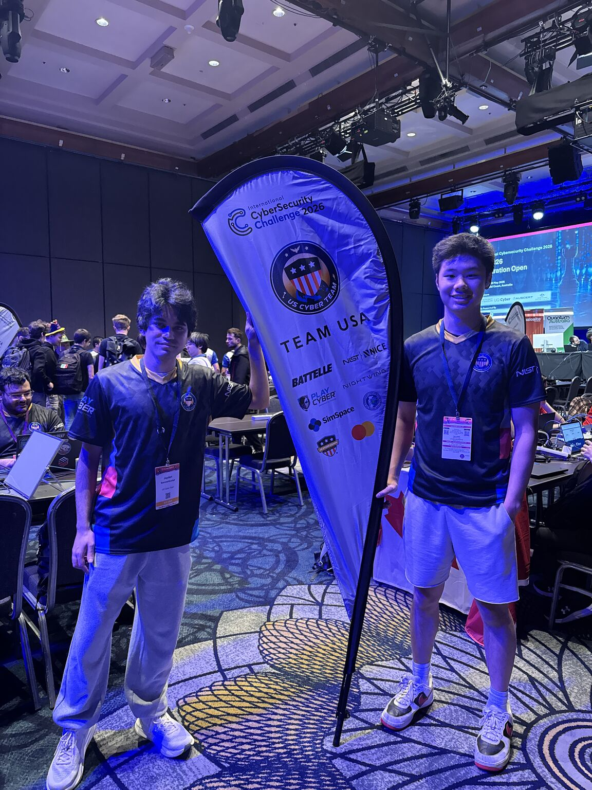
Veria · Cybersecurity Challenge
Cayden and Jayden at the International Cybersecurity Challenge. Strong evidence of the competitive-hacking story, but only two of the three founders. 1152 × 1536.
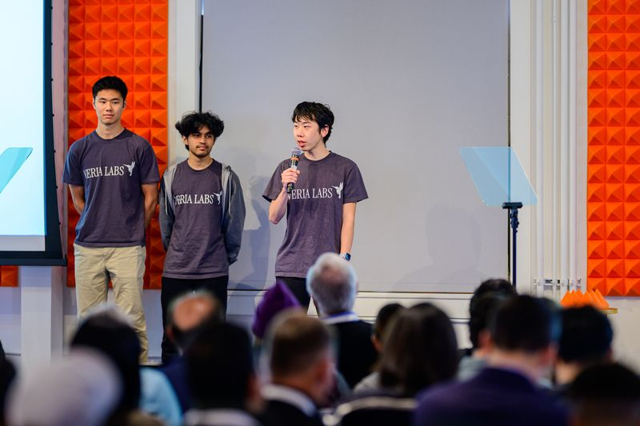
Veria
Three founders together at YC Demo Day. Useful composition, but only 800 × 533 pixels; request the full-resolution original before making a large portrait.
Terac
Markup unresolvedInvestors: Emergence Capital, SignalFire and Audacious Ventures. The company’s total-capital list also includes Z Fellows.
Proposed slide copy
Context and next step
Resolve with Gadi/Zac whether a newer financing or approved mark exists. Use the real team dinner image now, or request a current photo of Zac Baker and Jack Blair together for a founder-focused hero. The December investor-update group includes investors and should not be captioned as team-only.
Valuation basis and evidence
Zac’s December 5, 2025 update explicitly says the $8M seed closed, bringing total funding above $9M. A June 2026 company post states $9M raised; do not relabel total capital as a $9M seed round. The September SOI snapshot carries our $10K at cost. Gadi’s October 7 note mentions both no markup and then a markup. No newer closed round or share price was found in the bounded Gmail/Notion review; contemplated discounted follow-on or Series A scenarios do not establish a completed markup.
Photo options
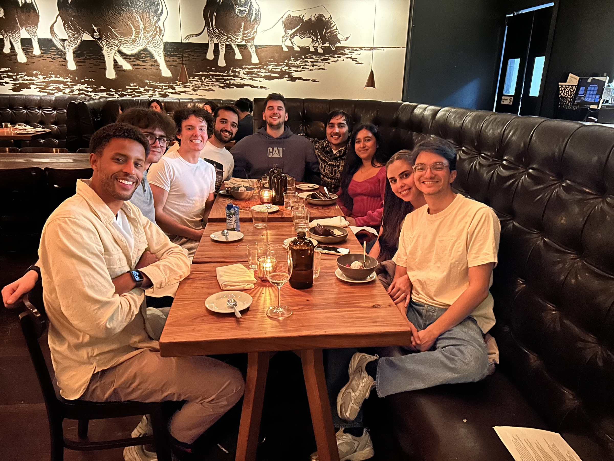
Terac
A warm team dinner photo from the official careers page. Works as a candid photograph; for the same founder-focused treatment as Flai, request Zac and Jack together.
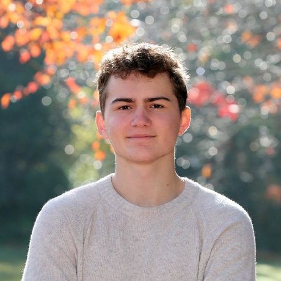
Zac Baker portrait
Individual portrait backup.
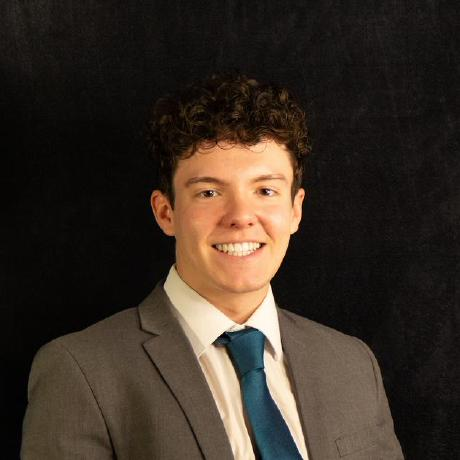
Jack Blair portrait
Individual portrait backup.
Bem
Closing / issuance confirmation pendingInvestors: September 29 purchaser schedule includes new-money rows for Uncork and SNR. Final lead and completed syndicate still need confirmation.
Proposed slide copy
Context and next step
Confirm closing and share issuance, then verify lead and completed syndicate. Use the clean photo of Upal Saha and Antonio Bustamante together. The source caption places Upal left and Antonio right.
Valuation basis and evidence
Execution-version documents model $10M new money. Our combined $100K cost converts into 46,480 shares. At the $2.8054 new-money price: $130,394.99 ÷ $100,000 = 1.30394992× (+30.4%). The October 6 administrator email still requests closing/issuance confirmation, so this is a conditional calculation. Keep it off the final deck until confirmed. Bem is included because it is also a live case study (slide 18).
Photo options
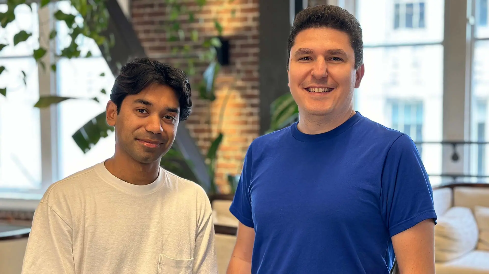
Bem
Two founders together, with clear faces and clean framing. Closest match to the Flai photo; a strong source for the deck’s portrait treatment.
Open items before final deck
- Pace: final close, lead, complete syndicate and ECMC completion; current in-person team photo.
- Terac: reconcile Gadi’s markup note with evidence of a newer round or approved valuation.
- Bem: closing, issuance, lead and completed syndicate.
- Photos: confirm founder caption order; request larger originals where needed. Halluminate’s office photo is only 800 pixels wide.
Optional photo request text · unsent
Hey [name] — we’re refreshing [company]’s case study in our fund deck. Could you send a high-res photo of the founding team together? An original with everyone’s faces clearly visible would be perfect. Please also send the names left to right.
Prepared for Gadi and Daniel. Proposed edits only; the live deck has not been changed and no founder requests have been sent. Source photos retain their original attribution links.